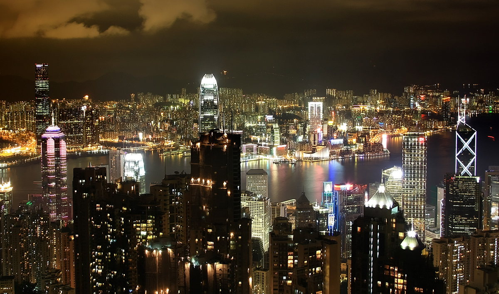

太平山顶和维多利亚港是看香港夜景的两个必去之地。山顶缆车处人很多，上到观景平台，倒没有想象中那么多人。夜色中的香港在雨后一片清朗。细密的灯光交织在一起，形成不真实的幻境，却又细腻得触手可及。观景台都是免费的，还有几架免费的望远镜供游客使用，想起内地一些地方，上山看山下的油菜花田也要收费，不免有些唏嘘感慨。
俯瞰夜景还有个好地方，就是山顶缆车站往东走，到旧山顶道之间的芬梨道。因为跟“分离”谐音，据说情侣们都忌讳来这条路。不知道是不是因为这个原因，这里人特别少，游客都挤在缆车站，到这里就没人了，周围安静，视野也很好。如果有时间的话，还可以慢慢走旧山顶道下山，感受一下闹市中环背后的清幽。
在维多利亚港看对面的中环，因为山势上升的关系，依山而建的摩天大楼显得特别有层次感，这是其他城市的夜景所没有的。中环一带的夜景因为灯光更一致，柔和而细密，比金紫荆广场附近全是广告牌的灯光就好看多了。深夜还有许多人恋恋不舍的坐在岸边，很多都是本地年轻仔，三五成群，坐在护栏上，脚放在前面石堤上，吹着海风，望着对面的灯光，或发呆或畅聊。偶尔有收工的小游轮从港口缓缓驶过。每一座城市在卸下白天的繁忙后，都有属于自己的温柔和静默的时刻，即便是香港。
